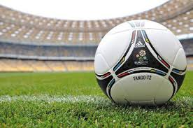
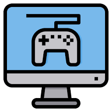

저의 취미는 축구와 당구, 컴퓨터게임이 있습니다.
1.축구
축구는 제가 아주 어렸을때 부터 좋아하던 운동이였습니다.
지금도 제가 제일 좋아하는 운동이고 틈만 날때마다 축구경기영상을 볼 정도로 하는 것 뿐만 아니라 시청하는 것도 좋아합니다.
중학교엔 학교대표, 고등학교에서는 반 대표를 했었습니다.
후에 꼭 외국에 나가서 외국팀의 경기를 직접 관람하는 것이 저의 목표입니다.
2.당구
당구는 제가 대학교에 와서 처음 접해본 것입니다.
처음에는 당구의 원리도 잘 몰라서 어려웠기 때문에 별로 흥미를 갖지 못했습니다.
하지만 꾸준히 다른 친구들과 당구를 치다보니 실력이 조금은 발전하고 내가 원하는 방식대로 공이 갈때에는 쾌감 비슷한것을 느껴 흥미가 조금씩 늘고 있는 스포츠입니다.
3.컴퓨터 게임
사실상 저의 지금 꿈을 만들어준 취미입니다.
어렸을 때 게임에 중독 상태였고 그걸 극복하고자 컴퓨터학원을 다니면서 컴퓨터에 관해 공부를 하다가 보안전문가를 꿈꿨기 때문입니다.
지금도 한번씩 공부에 대한 스트레스 등을 풀때 게임을 합니다.
4.노래
아마 위에 취미들을 다 포함해서 가장 많이 했던 취미생활이라고 생각합니다.
지금 학교 동아리도 어쿠스틱 밴드 동아리를 활동하고 있고 해당 동아리의 회장도 겸임했었습니다.
개인적으로 방학 때나 시간이 날 때, 보컬 학원을 가서 제대로 배워보고 싶습니다.